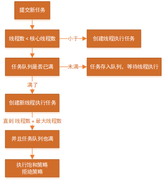

线程池
优点：
第一：降低资源消耗，创建线程和销毁十分浪费资源，线程池预先创建好线程，并重复利用线程，降低资源消耗。
第二：提高响应速度，任务不需要等待线程的创建就能直接执行。
第三：提高线程的可管理性，线程是稀缺资源，如果无限制创建，不仅会消耗系统资源，还会降低系统的稳定性，使用线程池可以进行统一管理、分配、调优、监控等。
1.线程池的使用
线程池的创建：ThreadPoolExecutor
java.util.concurrent.ThreadPoolExecutor
构造方法：
ThreadPoolExecutor(int corePoolSize,
int maximumPoolSize,
long keepAliveTime,
TimeUnit unit,
BlockingQueue<Runnable> workQueue,
ThreadFactory threadFactory,
RejectedExecutionHandler handler);
2.线程池的核心参数
- corePoolSize：核心线程数
- maximumPoolSize：最大线程数
- keepAliveTime：线程活动保持时间
- TimeUnit：线程活动保持时间的单位，可选：DAYS、HOURS、MINUTES、SECONDS、MILLISECONDS等
- workQueue：任务队列，用于保存等待执行的任务的阻塞队列
- threadFactory：线程工厂，用于创建线程的工厂，可以通过线程工厂给每个线程设置具有含义的线程名
- RejectedExecutionHandler：饱和策略(拒绝策略)
3.线程池的工作原理
线程池的主要工作流程

- 提交一个任务到线程池时
若：线程池里存活的线程数 < 核心线程数corePoolSize，则线程池会创建一个线程来执行任务。
新创建的这个线程会一直存活着，就算空闲时间超过了keepAliveTime，线程也不会被销毁，而是一直阻塞在那里一直等待任务队列的任务来执行。
如果调用了线程池的prestartAllCoreThreads方法，则线程池会提前创建并启动所有基本线程。
- 若：线程池里存活的线程数 = 核心线程数corePoolSize，则新提交的任务会被放进任务队列workQueue里排队，等待执行。
若：线程池里存活的线程数 = 核心线程数corePoolSize，并且任务队列workQueue也满了，则线程池就会继续创建新的线程来处理新的任务，直到线程数达到maximumPoolSize，就不会再创建了。
这些新创建的线程执行完了当前任务过后，在任务队列里面还有任务的时候也不会销毁，而是去任务队列拿任务出来执行。在当前线程数大于corePoolSize过后，线程执行完当前任务，会有一个判断当前线程是否需要销毁的逻辑：如果能从任务队列中拿到任务，那么继续执行，如果拿任务时阻塞（说明队列中没有任务），那超过keepAliveTime时间就直接返回null，并且销毁当前线程，直到线程池里面的线程数等于corePoolSize之后才不会进行线程销毁。
- 若：线程池里存活的线程数 = maximumPoolSize，并且任务队列也满了，则新任务将会采用饱和策略(拒绝策略)的处理器进行处理。
4.任务队列(阻塞队列)
- ArrayBlockingQueue：是一个基于数组结构的有界阻塞队列，此队列按 FIFO（先进先出）原则对元素进行排序
- LinkedBlockingQueue：一个基于链表结构的阻塞队列，此队列按FIFO （先进先出） 排序元素，吞吐量通常要高于ArrayBlockingQueue。静态工厂方法Executors.newFixedThreadPool()使用了这个队列。
- SynchronousQueue：一个不存储元素的阻塞队列。每个插入操作必须等到另一个线程调用移除操作，否则插入操作一直处于阻塞状态，吞吐量通常要高于LinkedBlockingQueue，静态工厂方法Executors.newCachedThreadPool使用了这个队列。
- PriorityBlockingQueue：一个具有优先级的无限阻塞队列
5.饱和策略(拒绝策略)
RejectedExecutionHandler（饱和策略）：当队列和线程池都满了，说明线程池处于饱和状态，那么必须采取一种策略处理提交的新任务。这个策略默认情况下是AbortPolicy，表示无法处理新任务时抛出异常。以下是JDK1.5提供的四种策略。
- AbortPolicy：直接抛出异常。
- CallerRunsPolicy：交给调用线程池所在的线程进行处理。
- DiscardOldestPolicy：丢弃队列里最老的任务，将当前这个任务继续提交给线程池。
- DiscardPolicy：不处理，直接丢弃掉。
- 自定义策略，实现RejectedExecutionHandler接口自定义策略。如记录日志或持久化不能处理的任务。
6.任务的提交执行
// 执行实现Runnable接口的任务
public void execute(Runnable command) ;
// 执行实现Callable接口的任务，可以有返回值
public <T> Future<T> submit(Callable<T> task)；
7.线程池的关闭
可以通过调用线程池的shutdown或shutdownNow方法来关闭线程池
原理是：遍历线程池中的工作线程，然后逐个调用线程的interrupt方法来中断线程
所以无法响应中断的任务可能永远无法终止
// shutdown 只是将线程池的状态设置成SHUTDOWN状态，然后中断所有没有正在执行任务的线程
public void shutdown() ;
// 首先将线程池的状态设置成STOP，然后尝试停止所有的正在执行或暂停任务的线程，并返回等待执行任务的列表
public List<Runnable> shutdownNow();
只要调用了这两个关闭方法的其中一个，isShutdown方法就会返回true。
当所有的任务都已关闭后,才表示线程池关闭成功，这时调用isTerminaed方法会返回true。
至于我们应该调用哪一种方法来关闭线程池，应该由提交到线程池的任务特性决定，通常调用shutdown来关闭线程池，如果任务不一定要执行完，则可以调用shutdownNow
8.使用工具类创建线程池
java.util.concurrent.Executors
创建不同的线程池：
// 固定线程大小的线程池 corePoolSize = maximumPoolSize = nThreads
public static ExecutorService newFixedThreadPool(int nThreads) ;
// 单个线程的线程池 corePoolSize = maximumPoolSize = 1
public static ExecutorService newSingleThreadExecutor()；
// 按需求创建线程数量的线程池 corePoolSize = 0 maximumPoolSize = Integer.MAX_VALUE
public static ExecutorService newCachedThreadPool()；
// 单线程 任务调度 的 线程池
public static ScheduledExecutorService newSingleThreadScheduledExecutor() ；
// 多线程 任务调度 的 线程池
public static ScheduledExecutorService newScheduledThreadPool(int corePoolSize) ；